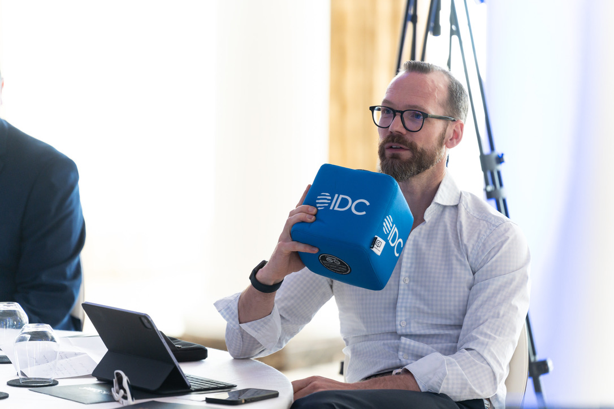

Home / About / Our story
Corbelle was founded to fix a problem we kept seeing: good businesses losing their best people's time to manual work, and being sold software as the cure.
Our story
Too many efficiency projects start with a product demo and forget about the people doing the work. A new system goes in, the old spreadsheet keeps running behind it, and the hours never come back. We founded Corbelle to change that.
We're a UK business optimisation practice for owner-led businesses with 50 to 400 staff. We find where the hours go, fix the process first, automate only what's worth automating, and bring your team with us.
Our approach is people first, fixed scope and senior-led. We don't sell software. We give you back the time to run your business.

Corbelle was founded in 2025 by Brendan Ellis, an ACCA Fellow with 20+ years inside Big 4, banking, private equity and media. He was Head of Data at Shawbrook Bank and Pantheon.
Values
These aren't words on a wall. They're how we run every engagement.
Every engagement is measured by the time and money it hands back, not the features it ships.
If you don't need new software, we'll tell you. If a vendor pays us a revenue share, you'll know before you decide.
Simplify first, automate second. Every workaround you remove is one less thing to maintain.
Change only sticks when the people doing the work own it. We design with your team, not around them.
Corbelle stays deliberately small. When the work needs cyber security, data engineering, branding or a custom build, we bring in partners we know and trust.
You keep one point of contact and one joined-up plan, and we stay accountable for the outcome.
Learn about our partner model →Get started
Whether you're an owner losing hours, an event looking for a speaker or a potential partner, let's talk.